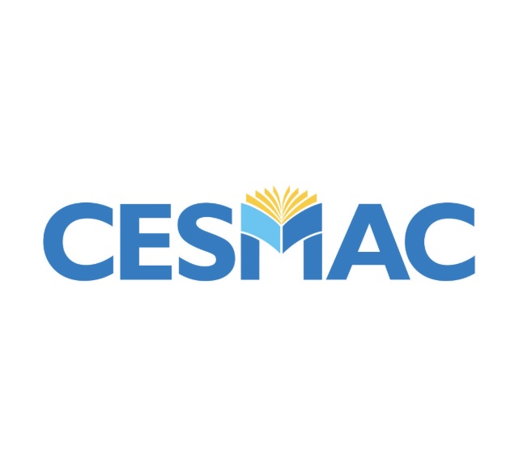
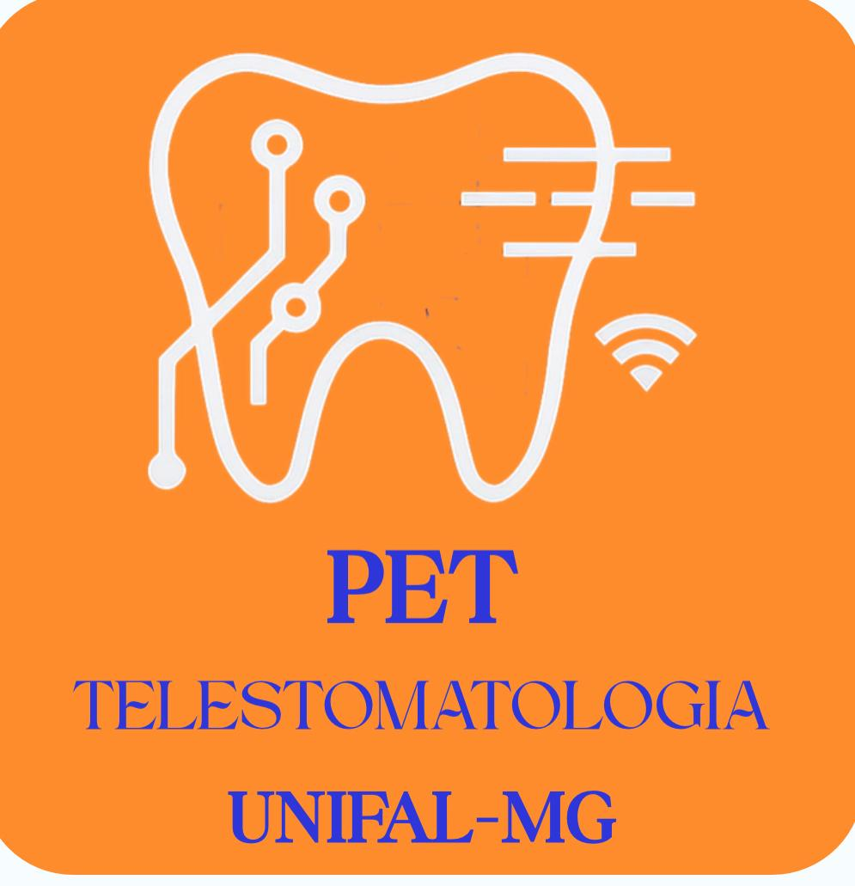

Odontologia baseada em evidências
Laser Oral Aid



Laserterapia odontológica
Protocolos, pacientes e rede de atendimento.
Ferramentas essenciais para consulta clínica, simulação de parâmetros, cadastro local e localização de serviços.
Parâmetros, segurança e referências.
Sugestão adaptada ao caso.
Cadastro local e acompanhamento.
Tempo, fluência e pontos.
Modelos e limites técnicos.
Serviços e rotas no mapa.
Biblioteca de protocolos
Acesso seguro local
Entrar como paciente, profissional ou admin
Módulo do paciente
Cadastro para acompanhamento
Módulo do profissional
Cadastro profissional
Acompanhamento
Pacientes cadastrados na cidade do profissional
Administração
Profissionais cadastrados
Cadastro de equipamentos
Unidades próximas
Referências e apoio institucional
Laser Oral Aid
Plataforma educacional e clínica vinculada a pesquisa, ensino e apoio à decisão em laserterapia odontológica.